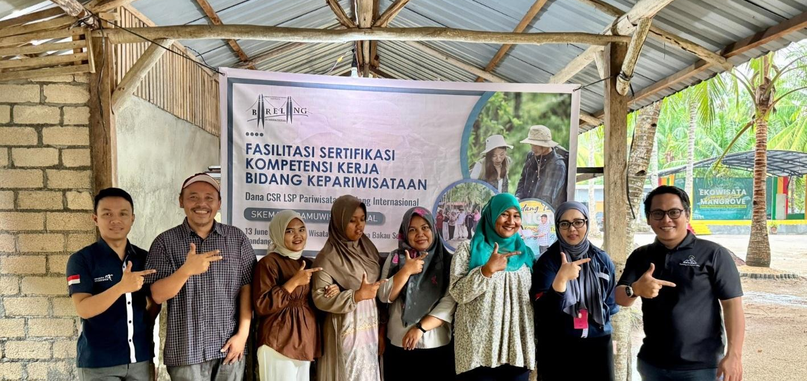

27 Desember 2025

Halo Sobat Mangrove!🌱 Pernah kepo nggak sih, gimana awalnya Ekowisata Mangrove Pandang Tak Jemu bisa jadi sekeren sekarang? Ternyata desa ini punya cerita panjang yang seru banget buat diketahui. Dulu, Kampung Tua Bakau Serip cuma berupa kampung pesisir kecil yang dihuni masyarakat Melayu yang hidup dari laut dan hutan mangrove. Warga sini udah dekat banget sama alam sejak dulu—mulai dari cari ikan, jaga bakau, sampai bikin kegiatan adat yang masih dijaga sampai sekarang. Nah, dari situlah muncul kesadaran kalau kampung ini punya potensi besar yang sayang banget kalau cuma disimpan sendiri. Karena ingin menjaga warisan alam dan tradisi, para penggerak desa akhirnya sepakat buat mengembangkan kawasan bakau jadi desa wisata. Tujuannya simpel: alam tetap lestari, tapi masyarakat juga bisa maju lewat pariwisata. Keren kan? 😎 Pelan-pelan, desa ini mulai berubah. Jembatan kayu dibangun, spot foto dibuat, kegiatan edukasi mangrove mulai jalan, sampai akhirnya lahirlah Ekowisata Mangrove Pandang Tak Jemu yang hits banget sampai sekarang. Semua ini nggak lepas dari semangat warga yang pengen kampungnya terus hidup, lestari, dan jadi kebanggaan bersama. Sekarang, bukan cuma wisatawannya yang happy, tapi alam dan masyarakatnya juga ikut merasakan manfaatnya. Dari kampung kecil di tepi laut, kini Pandang Tak Jemu jadi contoh desa yang maju tanpa ninggalin identitasnya. 🌊✨ Ayo kita terus dukung dan rawat bersama desa wisata kece ini, biar pesonanya makin mendunia! 💚 📖 Kalau penasaran dengan sejarah lengkapnya, langsung saja jelajahi kisahnya di web resmi! 👉 Sejarah lengkap Ekowisata Mangrove Pandang Tak Jemu